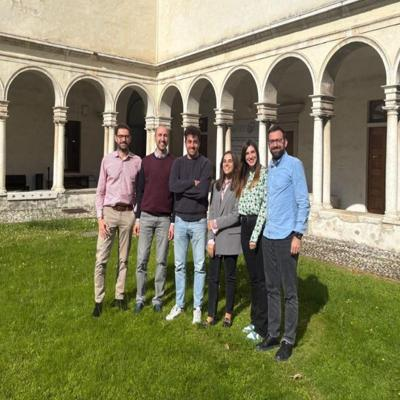
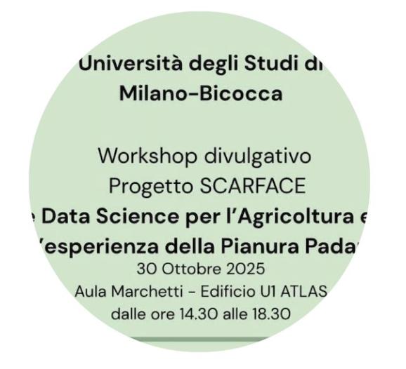

Data-Driven Insights
DS-CHANGES integrates high-resolution climate, environmental, and economic data to identify the main drivers of carbon farming adoption in Lombardy.
Carbon Farming Scenarios
DS-CHANGES builds an agent-based model calibrated with real-world data to simulate future adoption scenarios and assess impacts of climate and agricultural policies.
Policy and Market Design
DS-CHANGES analyses policy instruments and carbon removal credit schemes to support effective climate mitigation strategies at regional and EU levels.
Outcomes
The DS-CHANGES project will publish a series of scientific papers, policy briefs, and open-access datasets. This section will be updated with our latest outputs on carbon farming and data-driven agricultural transition.
Updates and results will be published soon.
The DS-CHANGES project explores the potential of agricultural landscapes for carbon storage and examines the impact of carbon farming practices. Supported by Fondazione Cariplo and enriched with data from the RICA dataset, the project aims to provide robust, data-driven evidence on the determinants of carbon farming practices in Lombardy. It involves creating a unique georeferenced dataset by combining soil and climate data with longitudinal data on Lombardy and Italian farms, using advanced econometric and machine learning techniques to understand the drivers of carbon-farming adoption. The project aims to provide robust, data-driven evidence on the determinants of carbon farming practices in Lombardy.

The project officially started with a kick-off meeting hosted at Università degli Studi di Brescia. Project partners gathered to outline shared goals and define initial milestones, setting the stage for collaborative work over the next two years.

On October 30, 2025, the DS-CHANGES project will be presented during the workshop “Statistica e Data Science per l’Agricoltura e l’Ambiente” at the University of Milano-Bicocca. The event, organized within the SCARFACE research project, focuses on the application of data science to agricultural and environmental systems in the Po Valley.
Details about the next project meeting or public event will be announced here.
Principal Investigator - Università degli Studi di Brescia (UNIBS)
Associate Professor of Economic Policy at UNIBS and collaborator of FEEM. His research focuses on the green transition, environmental economics, and the water-energy-food nexus. He leads the DS-CHANGES project and contributes to several national and EU research initiatives on sustainable resource governance.
Associate Professor - Università degli Studi di Brescia (UNIBS)
Associate Professor at UNIBS and Senior Researcher at FEEM. His work explores macroeconomic and industrial dynamics with a focus on financial markets and innovation. He employs agent-based and econometric modeling approaches and has held positions at OFCE-SciencesPo, Université Côte d’Azur, and the University of Amsterdam.
Research Fellow - Università degli Studi di Brescia (UNIBS)
Research fellow at UNIBS and PhD candidate within the European Joint Doctorate “EPOC”. Her work focuses on agent-based modeling, international economics, and climate change economics. Within DS-CHANGES she develops simulation models for carbon farming policy evaluation.
Professor of Economics - Scuola Superiore Sant’Anna (SSSA)
Professor of Economics at Sant’Anna School and Scientist at RFF-CMCC European Institute on Economics and the Environment. His research centers on climate change economics, technological innovation, and integrated assessment modeling. ERC grantee and author of numerous publications, he serves on several international editorial boards.
Researcher - Scuola Superiore Sant’Anna (SSSA)
Tenure-track researcher at the Institute of Economics and L’EMbeDS, Sant’Anna School of Advanced Studies. His research combines big-data econometrics and agent-based models to study climate impacts, inequality, and land-use change. His work has appeared in PNAS, JEEM, and other journals.
Postdoctoral Researcher - Scuola Superiore Sant’Anna (SSSA)
Postdoctoral researcher in applied environmental economics at Sant’Anna School of Advanced Studies. Her research combines impact evaluation and microdata analysis to study the economic effects of climate shocks and the design of adaptation and mitigation policies in sectors such as agriculture and tourism.
Researcher - Fondazione Eni Enrico Mattei (FEEM)
Researcher at FEEM and PhD candidate in Political Science and International Relations at the University of Geneva. Her research focuses on the water-energy-food nexus, sustainable project assessment, and energy poverty. Within DS-CHANGES, she is in charge of dissemination and communication activities.
The DS-CHANGES project is funded by Fondazione Cariplo.
Contact